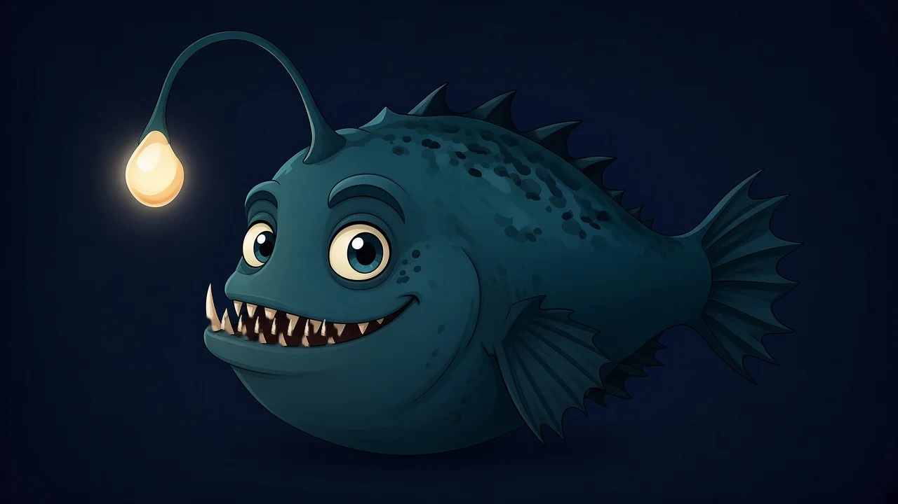

lore
Lurker

Who he is
Lurker is the anglerfish who holds up the light. He lives at the bottom of everything we make and greets anyone who wanders in from the dark. He has a lot of teeth. He insists they're for smiling.
The lure
The glowing lure is the "light" in Lurking Light: the one warm spot in the deep that everyone drifts toward. On the home page, you can poke it. He talks back. Poke it enough and something happens.
Where he shows up
- The site hero and the swim-by easter egg
- Lurker Shorts, our tiny animated bits
- Forum ranks: everyone starts as a "Lurker"
dev wiki Logged-in builders will see tuning notes here. Not built yet.